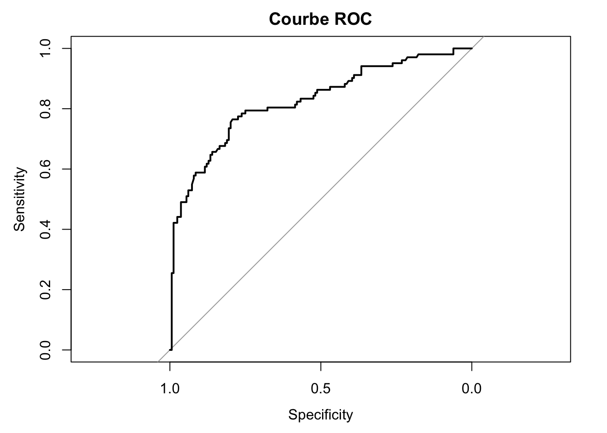
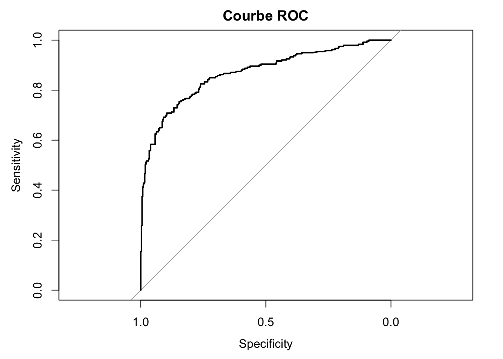
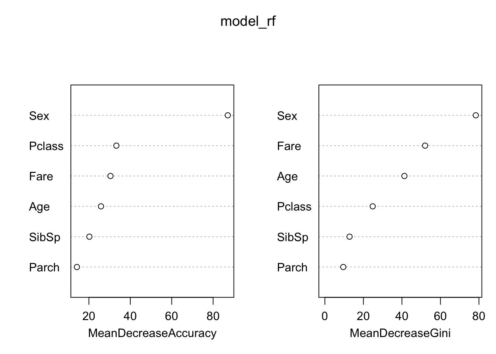
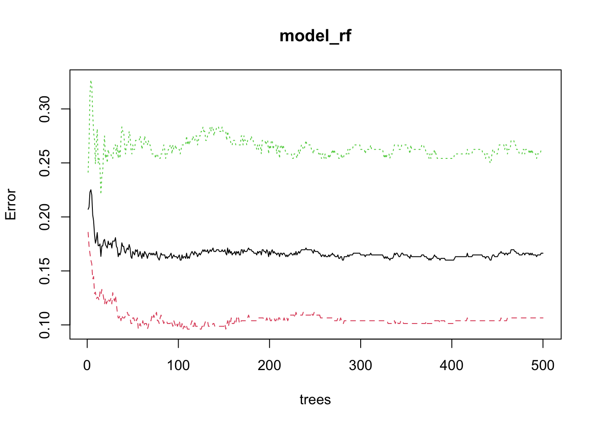
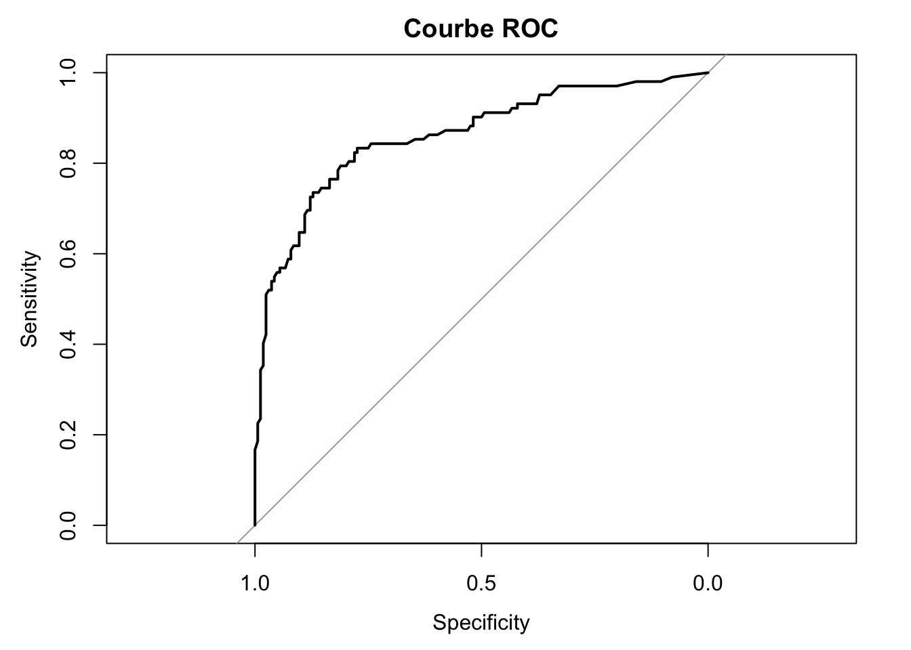
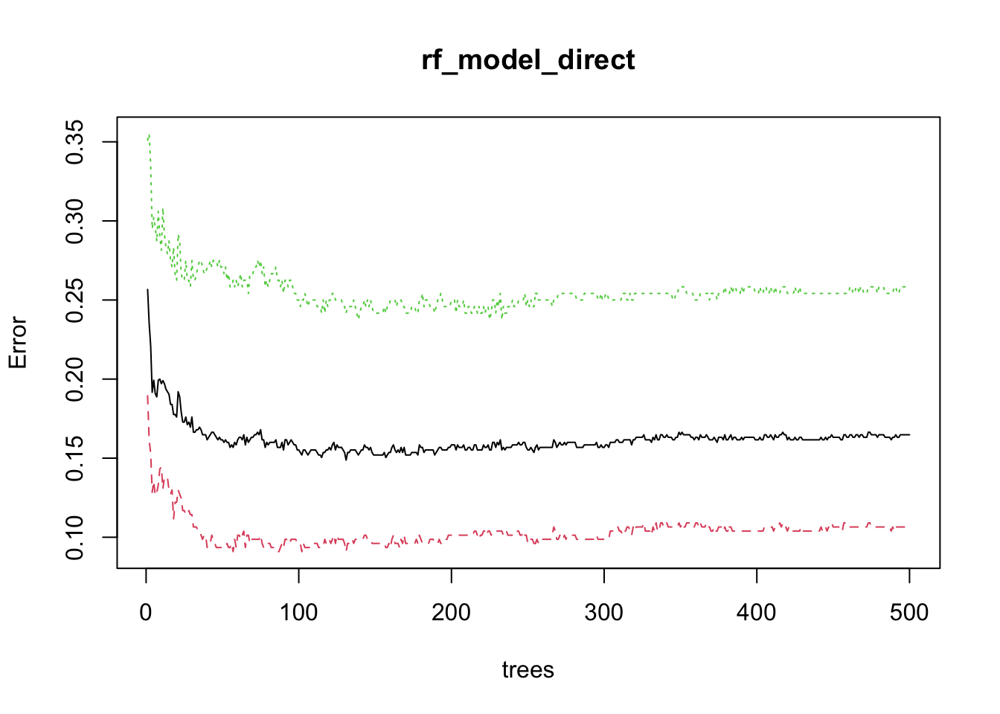
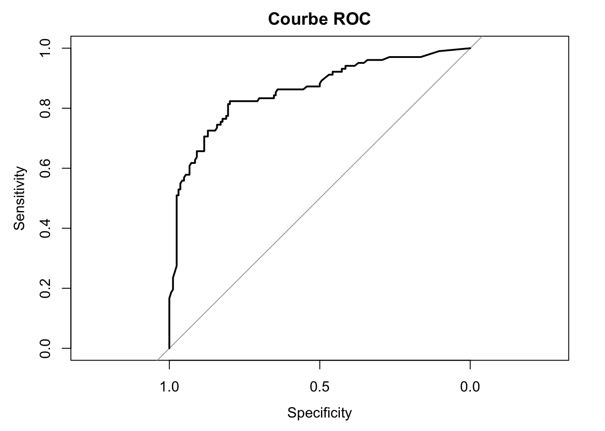

df <- read.csv("/Users/natachanjongwayepnga/Documents/GitHub/LeCoinStat/R_Pour_La_Datascience/Jour6/titanic.csv")DLCR6_Modèles_Machine_Learning
Régression logistique en R
Preprocessing
#install.packages("caret")
library(caret)Loading required package: ggplot2Loading required package: latticesummary(df) PassengerId Survived Pclass Name
Min. : 1.0 Min. :0.0000 Min. :1.000 Length:891
1st Qu.:223.5 1st Qu.:0.0000 1st Qu.:2.000 Class :character
Median :446.0 Median :0.0000 Median :3.000 Mode :character
Mean :446.0 Mean :0.3838 Mean :2.309
3rd Qu.:668.5 3rd Qu.:1.0000 3rd Qu.:3.000
Max. :891.0 Max. :1.0000 Max. :3.000
Sex Age SibSp Parch
Length:891 Min. : 0.42 Min. :0.000 Min. :0.0000
Class :character 1st Qu.:20.12 1st Qu.:0.000 1st Qu.:0.0000
Mode :character Median :28.00 Median :0.000 Median :0.0000
Mean :29.70 Mean :0.523 Mean :0.3816
3rd Qu.:38.00 3rd Qu.:1.000 3rd Qu.:0.0000
Max. :80.00 Max. :8.000 Max. :6.0000
NA's :177
Ticket Fare Cabin Embarked
Length:891 Min. : 0.00 Length:891 Length:891
Class :character 1st Qu.: 7.91 Class :character Class :character
Mode :character Median : 14.45 Mode :character Mode :character
Mean : 32.20
3rd Qu.: 31.00
Max. :512.33
# imputer les valeurs manquantes par le moyenne
df$Age[is.na(df$Age)] <- mean(df$Age, na.rm = T)str(df)'data.frame': 891 obs. of 12 variables:
$ PassengerId: int 1 2 3 4 5 6 7 8 9 10 ...
$ Survived : int 0 1 1 1 0 0 0 0 1 1 ...
$ Pclass : int 3 1 3 1 3 3 1 3 3 2 ...
$ Name : chr "Braund, Mr. Owen Harris" "Cumings, Mrs. John Bradley (Florence Briggs Thayer)" "Heikkinen, Miss. Laina" "Futrelle, Mrs. Jacques Heath (Lily May Peel)" ...
$ Sex : chr "male" "female" "female" "female" ...
$ Age : num 22 38 26 35 35 ...
$ SibSp : int 1 1 0 1 0 0 0 3 0 1 ...
$ Parch : int 0 0 0 0 0 0 0 1 2 0 ...
$ Ticket : chr "A/5 21171" "PC 17599" "STON/O2. 3101282" "113803" ...
$ Fare : num 7.25 71.28 7.92 53.1 8.05 ...
$ Cabin : chr "" "C85" "" "C123" ...
$ Embarked : chr "S" "C" "S" "S" ...df$Survived <- as.factor(df$Survived)
df$Sex <- as.factor(df$Sex)
df$Pclass <- as.factor(df$Pclass)Diviser la base de données deux
La base d’apprentissage 70% de la base totale
La base test: 30%
#install.packages(caret)
df <-df[, c(2,3,5,6,7,8,10)]
library(caret)
set.seed(123)# Assurer la reproductibilité de votre
index <- createDataPartition(df$Survived,p=0.7, list=F)base_train <- df[index, ]
base_test <- df[-index,]
names(base_train)[1] "Survived" "Pclass" "Sex" "Age" "SibSp" "Parch" "Fare" # autre option
index <- sample(1:nrow(df), 0.7*nrow(df))Regression logistique
model_logistique <- glm(Survived ~ ., family = binomial, data = base_train)
model_logistique2 <- glm(Survived ~ Pclass + Sex + Age + SibSp + Parch + Fare, family = binomial, data = base_train)summary(model_logistique)
Call:
glm(formula = Survived ~ ., family = binomial, data = base_train)
Coefficients:
Estimate Std. Error z value Pr(>|z|)
(Intercept) 4.070865 0.559289 7.279 3.37e-13 ***
Pclass2 -1.117123 0.365626 -3.055 0.00225 **
Pclass3 -2.340724 0.363779 -6.434 1.24e-10 ***
Sexmale -2.948907 0.248631 -11.861 < 2e-16 ***
Age -0.038568 0.009477 -4.070 4.70e-05 ***
SibSp -0.336275 0.143247 -2.348 0.01890 *
Parch -0.194215 0.142105 -1.367 0.17172
Fare 0.002565 0.003037 0.845 0.39833
---
Signif. codes: 0 '***' 0.001 '**' 0.01 '*' 0.05 '.' 0.1 ' ' 1
(Dispersion parameter for binomial family taken to be 1)
Null deviance: 832.49 on 624 degrees of freedom
Residual deviance: 528.96 on 617 degrees of freedom
AIC: 544.96
Number of Fisher Scoring iterations: 5anova(model_logistique, test = "Chisq")Analysis of Deviance Table
Model: binomial, link: logit
Response: Survived
Terms added sequentially (first to last)
Df Deviance Resid. Df Resid. Dev Pr(>Chi)
NULL 624 832.49
Pclass 2 85.914 622 746.57 < 2.2e-16 ***
Sex 1 192.396 621 554.18 < 2.2e-16 ***
Age 1 14.214 620 539.96 0.0001632 ***
SibSp 1 8.645 619 531.32 0.0032797 **
Parch 1 1.587 618 529.73 0.2077310
Fare 1 0.774 617 528.96 0.3789238
---
Signif. codes: 0 '***' 0.001 '**' 0.01 '*' 0.05 '.' 0.1 ' ' 1# Significativité globale du modèle
G2 = model_logistique$null.deviance-model_logistique$deviance
1-pchisq(G2,df=1)[1] 0Prédiction sur une nouvelle base
prediction <- predict(model_logistique, type = "response")# Package pour l'évaluation des modèles
#install.packages("pROC")
library(pROC)Type 'citation("pROC")' for a citation.
Attaching package: 'pROC'The following objects are masked from 'package:stats':
cov, smooth, varprediction <- predict(model_logistique, newdata = base_test[,-1],type = "response")roc_obj <- roc(base_test$Survived, prediction, levels=c("0", "1"))Setting direction: controls < casesprint(auc(roc_obj))Area under the curve: 0.8254plot(roc_obj, main="Courbe ROC")
roc_resultat <- roc(response = base_test$Survived, predictor = prediction)Setting levels: control = 0, case = 1Setting direction: controls < casesauc_resultat <- auc(roc_resultat)
auc_resultatArea under the curve: 0.8254Prédiction base d’apprentissage
prediction <- predict(model_logistique,type = "response")
prediction 3 4 6 7 8 9
0.678676263 0.925593529 0.087662785 0.304129926 0.079812991 0.581498101
11 12 13 14 15 16
0.748044491 0.870118454 0.122444490 0.018889865 0.770357549 0.705479607
19 20 21 22 23 25
0.560802304 0.646395314 0.217828304 0.218720113 0.763544595 0.567732925
26 27 28 29 31 33
0.276418821 0.087410137 0.417373287 0.646778724 0.413462181 0.646703018
37 38 40 41 42 43
0.087410997 0.118360251 0.707390514 0.468900480 0.836167720 0.087547473
44 45 46 47 49 51
0.902028771 0.734495996 0.087579070 0.065330902 0.048284540 0.050870094
52 53 54 55 56 60
0.118293359 0.885090086 0.827165942 0.194626248 0.516885180 0.026790951
61 62 64 66 70 71
0.114181392 0.943238163 0.063047916 0.054392880 0.053561726 0.231045680
72 73 77 79 82 83
0.302279083 0.350557837 0.087547473 0.415511071 0.090062106 0.646724992
84 85 86 88 89 90
0.540622559 0.910927526 0.375010157 0.087579070 0.921367124 0.106809310
91 92 93 94 96 99
0.089757806 0.122390540 0.303316582 0.052477192 0.087579070 0.818645761
100 102 105 109 111 113
0.171352178 0.087547473 0.035639450 0.065124991 0.364154283 0.114394487
114 116 117 118 119 120
0.656492346 0.118326801 0.019494363 0.198442510 0.654060053 0.499921699
121 124 125 126 127 128
0.215998631 0.849874696 0.277536575 0.120359868 0.087517606 0.106587272
129 130 131 132 133 134
0.527859803 0.050381174 0.077897411 0.122169171 0.405729465 0.827165942
135 138 139 140 141 143
0.283731387 0.376330934 0.140370325 0.598555469 0.558573284 0.624544262
144 145 146 149 150 151
0.126281086 0.340762662 0.237905728 0.151273383 0.170556877 0.126748671
152 154 156 157 159 160
0.955079576 0.041805779 0.292802789 0.756370896 0.087704681 0.005145573
161 162 163 164 166 168
0.044417555 0.810215428 0.099607206 0.135613966 0.129919933 0.259801113
169 171 172 173 174 175
0.510750605 0.241443835 0.055322908 0.766676179 0.118326801 0.277052159
176 177 178 180 181 184
0.081410268 0.029257349 0.901685822 0.068675270 0.089843064 0.309924167
185 186 190 191 192 193
0.776246985 0.526164854 0.069981849 0.852318542 0.333006470 0.664009863
194 195 196 197 198 199
0.360158468 0.920192346 0.901117211 0.087517606 0.046918530 0.646703018
203 204 206 207 208 209
0.074922550 0.049496684 0.815420547 0.060167434 0.102169104 0.756378789
213 215 216 217 220 221
0.114186788 0.064127611 0.944249178 0.670208218 0.245033241 0.140009645
223 224 225 226 227 228
0.040500602 0.087547473 0.389579453 0.114732700 0.331583843 0.120170318
231 232 233 235 236 237
0.930784063 0.089700198 0.096558548 0.290311639 0.646585812 0.123277165
238 239 241 242 243 244
0.910852752 0.331583843 0.570893459 0.571550404 0.252237993 0.114154365
245 247 248 249 250 251
0.086488874 0.686945685 0.842489068 0.331642556 0.087269698 0.087415252
252 253 254 255 256 257
0.526975984 0.231266606 0.064718950 0.453201889 0.565210808 0.958055260
258 259 260 261 264 266
0.958340373 0.982621156 0.710497840 0.087517606 0.396333066 0.204779003
267 269 270 271 274 275
0.036495656 0.884248167 0.955589133 0.514002610 0.395773967 0.646703018
277 278 280 281 284 285
0.503612824 0.242209279 0.475445351 0.023990409 0.126649417 0.510798671
286 287 288 289 291 292
0.078038772 0.086950985 0.114354428 0.170556877 0.963396559 0.962144532
297 300 301 304 305 306
0.108459303 0.929763964 0.646703018 0.862945912 0.087579070 0.679278251
309 310 311 312 313 314
0.193577291 0.955204989 0.966382365 0.952055615 0.815652113 0.092925789
315 316 317 318 319 321
0.107478388 0.678636663 0.853023466 0.114869470 0.948322066 0.114186788
323 324 325 326 327 328
0.861567659 0.838773440 0.005145573 0.953923293 0.027775703 0.831826838
330 331 332 333 335 337
0.967961735 0.492945713 0.363594330 0.463998686 0.949402327 0.459592841
338 339 340 341 342 343
0.944513402 0.050513245 0.372253767 0.369093361 0.918527070 0.260815997
344 345 346 347 348 349
0.283731387 0.205825113 0.887099258 0.809128536 0.571927195 0.138932980
350 351 352 354 355 356
0.056443790 0.110841595 0.516564946 0.077730321 0.087410137 0.093273172
357 358 359 360 361 362
0.959659085 0.820758350 0.646778724 0.646778724 0.021815688 0.201198552
363 364 365 366 367 368
0.459447149 0.072388248 0.065330902 0.086493940 0.833896422 0.646397776
371 374 375 379 381 382
0.490919142 0.650519323 0.614305840 0.121336155 0.954110578 0.793067770
383 384 385 386 387 388
0.080718786 0.925398998 0.087547473 0.377333030 0.038908633 0.831826838
389 391 393 394 395 396
0.087513346 0.335495968 0.049694050 0.958434992 0.612755052 0.114328455
399 401 402 403 407 408
0.298321650 0.062820243 0.099670480 0.647743116 0.040470712 0.355884742
409 411 412 413 415 416
0.118286672 0.087547473 0.087335144 0.936592574 0.052379518 0.646878794
417 418 419 420 421 422
0.767685649 0.870391819 0.246221319 0.734576821 0.087547473 0.118275518
423 424 425 426 427 428
0.089721142 0.539088976 0.083812230 0.087415252 0.832610365 0.907847377
430 431 432 433 434 437
0.080742578 0.527508151 0.571927195 0.743509047 0.135152387 0.486851378
438 440 442 444 445 448
0.694448737 0.237968790 0.122844650 0.870701470 0.087591880 0.469720837
449 450 451 452 454 456
0.672591130 0.308879941 0.115357113 0.066033925 0.294084714 0.089725499
460 461 462 463 464 466
0.087517606 0.340465825 0.075199293 0.356175571 0.140264535 0.064993043
467 469 470 471 473 474
0.242209279 0.087512486 0.707617841 0.087415252 0.736423168 0.891101926
475 476 477 478 479 480
0.712359799 0.527443537 0.169539001 0.065654108 0.114257057 0.816123991
481 482 483 484 485 486
0.028877259 0.242209279 0.042026219 0.337364232 0.513764874 0.365163189
487 488 489 490 491 494
0.931854470 0.261377443 0.086656196 0.113488807 0.066033925 0.184009576
496 497 499 500 501 502
0.088901356 0.864437186 0.941068657 0.106747128 0.135613966 0.719117225
503 505 506 510 511 512
0.646632227 0.975292354 0.591641664 0.111388057 0.089694963 0.087579070
513 514 515 516 518 519
0.450395074 0.858666154 0.106673785 0.353545586 0.090935374 0.785109803
521 522 523 525 527 528
0.959051268 0.114354428 0.087410137 0.087410997 0.741209465 0.633049975
531 532 533 534 535 536
0.917798076 0.087410997 0.084217743 0.563066199 0.644583496 0.913935259
538 539 541 542 546 548
0.960333474 0.088910019 0.922447771 0.432835852 0.217597902 0.248794604
549 550 551 553 554 555
0.048829298 0.323015909 0.589586697 0.087533829 0.114180303 0.711274691
557 558 560 561 563 565
0.879200673 0.636466462 0.512507201 0.087517606 0.261063302 0.646878794
567 568 569 570 571 572
0.126605679 0.472243249 0.087410997 0.080705313 0.086316740 0.815512263
574 575 576 577 582 583
0.646703018 0.140009645 0.128490507 0.842343119 0.910569150 0.118035973
585 586 587 589 590 592
0.087714942 0.960550708 0.145617340 0.114394487 0.087579070 0.873225048
594 595 596 598 599 600
0.553827853 0.155542065 0.044117844 0.042753711 0.087410137 0.277249188
601 602 603 604 606 607
0.773921644 0.087547473 0.521302871 0.052395433 0.051975273 0.086624900
608 609 610 611 613 614
0.539627384 0.815654305 0.948910251 0.268714938 0.571550404 0.087517606
615 617 618 619 620 621
0.072560654 0.046369241 0.606443401 0.884190782 0.274679778 0.071803539
623 624 625 627 628 630
0.077254728 0.118307859 0.120531731 0.103226758 0.969553854 0.087514186
631 633 635 639 641 642
0.131638193 0.491501309 0.514328354 0.327296681 0.122390540 0.965208327
644 645 646 647 648 649
0.098029920 0.707617841 0.295504505 0.126605679 0.279526854 0.087476651
652 653 655 656 660 661
0.893241672 0.118462873 0.741394026 0.197048705 0.229187855 0.243014584
662 664 668 669 670 672
0.060485408 0.069915108 0.087522726 0.054343740 0.938342274 0.431296519
673 674 676 677 678 679
0.064887882 0.239133464 0.130896936 0.104983489 0.742911409 0.212559588
681 682 683 684 685 686
0.646930055 0.568910757 0.122768671 0.023933790 0.060669917 0.171159261
687 688 690 694 695 696
0.039307181 0.127252276 0.978961816 0.102989636 0.245263276 0.122810043
697 698 699 700 701 702
0.052395433 0.646693232 0.266200851 0.056305649 0.974014945 0.459959319
704 706 708 710 711 713
0.103112126 0.192687723 0.394010901 0.054392880 0.963462515 0.282474183
714 715 718 719 721 722
0.090058596 0.122671963 0.874278690 0.089117995 0.931677946 0.100416325
723 724 725 726 727 730
0.218720113 0.131218150 0.470168084 0.122613386 0.698829649 0.610636363
731 732 734 735 736 737
0.970528415 0.168705396 0.299665548 0.299665548 0.093074040 0.278505746
738 741 742 743 744 746
0.747639644 0.513361906 0.401182402 0.946489264 0.080218338 0.127171174
751 753 754 755 757 758
0.911167017 0.078193456 0.110506059 0.632852648 0.092904173 0.340762662
760 761 762 763 764 765
0.953468022 0.088910019 0.058316409 0.122218469 0.905977126 0.139924743
766 767 768 769 770 771
0.877348469 0.519510547 0.639614098 0.066698713 0.080802087 0.107164613
773 774 776 777 778 779
0.686172864 0.087410137 0.130889642 0.087517606 0.827683174 0.087515046
780 781 782 783 784 786
0.940489379 0.776831504 0.961768769 0.520095176 0.046143072 0.102995560
788 790 791 792 794 795
0.047791844 0.389586825 0.087517606 0.366892253 0.513807713 0.103148682
796 797 798 799 800 802
0.187554208 0.904437058 0.635711618 0.086489726 0.526112601 0.784986169
803 804 807 809 810 811
0.569735618 0.196654612 0.405596505 0.187554208 0.930734593 0.099633087
812 813 814 815 816 819
0.065315182 0.211131154 0.461430333 0.085142037 0.494129825 0.054133240
820 821 822 823 826 829
0.050683300 0.855033093 0.096399308 0.414927639 0.087353892 0.087517606
830 831 833 835 837 838
0.868163686 0.701073506 0.087410997 0.131050193 0.118524275 0.087579070
840 841 842 843 844 845
0.513169686 0.122410046 0.357708041 0.952271778 0.073586701 0.135613966
847 848 850 852 853 856
0.005145573 0.072534045 0.943623710 0.017075839 0.709228409 0.703846090
857 860 861 865 866 867
0.902705030 0.087410997 0.031176251 0.291634450 0.796930835 0.833643033
869 871 872 875 877 880
0.087876697 0.099634996 0.865583443 0.831894248 0.122940248 0.873262002
883 885 887 888 889 890
0.712716602 0.102948179 0.268319881 0.968170431 0.480045634 0.548875541
891
0.080685488 roc_obj <- roc(base_train$Survived, prediction, levels=c("0", "1"))Setting direction: controls < casesprint(auc(roc_obj))Area under the curve: 0.8683plot(roc_obj, main="Courbe ROC")
roc_resultat <- roc(response = base_train$Survived, predictor = prediction)Setting levels: control = 0, case = 1
Setting direction: controls < casesauc_resultat <- auc(roc_resultat)
auc_resultatArea under the curve: 0.8683Forêts aléatoires
#install.packages("randomForest")
library(randomForest)randomForest 4.7-1.1Type rfNews() to see new features/changes/bug fixes.
Attaching package: 'randomForest'The following object is masked from 'package:ggplot2':
marginmodel_rf <- randomForest(Survived ~ ., data=base_train, importance=TRUE,
ntree=500)
model_rf
Call:
randomForest(formula = Survived ~ ., data = base_train, importance = TRUE, ntree = 500)
Type of random forest: classification
Number of trees: 500
No. of variables tried at each split: 2
OOB estimate of error rate: 16.64%
Confusion matrix:
0 1 class.error
0 344 41 0.1064935
1 63 177 0.2625000# Importance des variables
varImp(model_rf) 0 1
Pclass 22.715321 22.715321
Sex 73.434662 73.434662
Age 18.601066 18.601066
SibSp 14.215484 14.215484
Parch 8.846552 8.846552
Fare 20.543189 20.543189varImpPlot(model_rf)
plot(model_rf)
prediction_train <- predict(model_rf, type = "prob")[,2]prediction_test <- predict(model_rf, newdata = base_test, type = "prob")[,2]roc_obj <- roc(base_train$Survived, prediction_train, levels=c("0", "1"))Setting direction: controls < casesprint(auc(roc_obj))Area under the curve: 0.8756plot(roc_obj, main="Courbe ROC")
roc_obj <- roc(base_test$Survived, prediction_test, levels=c("0", "1"))Setting direction: controls < casesprint(auc(roc_obj))Area under the curve: 0.8615plot(roc_obj, main="Courbe ROC")
Optimisation des paramètres de la forêt aléatoire
# Définition des paramètres de validation croisée
control <- trainControl(method="cv", number=5, search="grid")
# Grid de paramètres à tester
tunegrid <- expand.grid(.mtry=c(1, 2, 3, 4, 5))
# Entraînement du modèle avec validation croisée et recherche des meilleurs hyperparamètres
rf_model <- train(Survived ~ ., data=base_train, method="rf", trControl=control, tuneGrid=tunegrid, ntree=500)# Meilleurs paramètres trouvés
print(rf_model$bestTune) mtry
3 3# Entraînement direct avec randomForest pour accès à l'erreur OOB
rf_model_direct <- randomForest(Survived ~ ., data=base_train, mtry=rf_model$bestTune$mtry, ntree=500)
plot(rf_model_direct)
# Importance des variables
importance <- varImp(rf_model, scale=FALSE)
print(importance)rf variable importance
Overall
Sexmale 81.531
Fare 63.682
Age 50.348
Pclass3 20.795
SibSp 12.311
Parch 10.290
Pclass2 4.192# Prédiction sur l'ensemble de test
predictions <- predict(rf_model, newdata=base_test)# Calcul de l'AUC et tracé de la courbe ROC
prob_predictions <- predict(rf_model, newdata=base_test, type="prob")
roc_obj <- roc(base_test$Survived, prob_predictions[,2], levels=c("0", "1"))Setting direction: controls < casesprint(auc(roc_obj))Area under the curve: 0.8577plot(roc_obj, main="Courbe ROC")